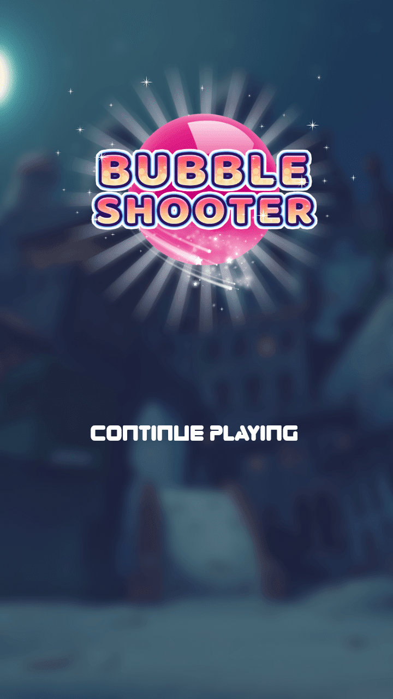

pausescreen
0
3
7

Your browser does not appear to support HTML5. Try upgrading your browser to the latest version.
What is a browser?
Microsoft Internet Explorer
Mozilla Firefox
Google Chrome
Apple Safari